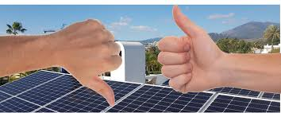

Blog de la Energia Solar
¿Que es la energia Solar?
Beneficios de la energia Solar
Energia Solar
El futuro de la energia Solar
Retos y desventajas
- Costo inicial elevado: los paneles y baterías requieren una inversión que no todos pueden pagar.
- Dependencia del clima: en días nublados o lluviosos, la producción de energía disminuye.
- Almacenamiento de energía: las baterías solares aún son caras y tienen un tiempo de vida limitado.
- Espacio necesario: para grandes instalaciones se requiere mucho terreno.
- Impacto ambiental indirecto: la fabricación de paneles solares utiliza minerales y procesos industriales
que también generan contaminación, aunque mucho menor que los combustibles fósiles.

Katherine Natalia Serrano Garcia
Cuarto Bachillerato B
Clave:25